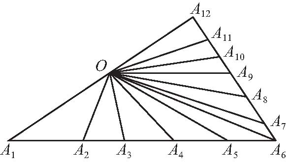
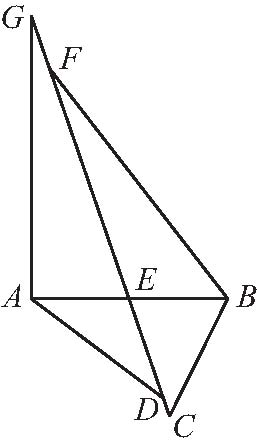
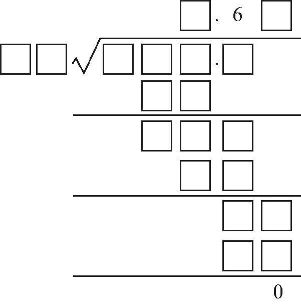
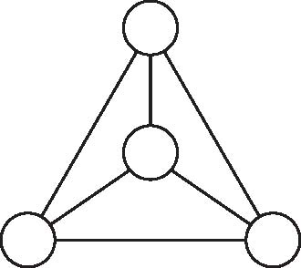

一、填空题（12×4＝48分）
1．计算：1.996＋19.97＋199.8＝_____．
2．用1，2，3，4，5，6，7，8，9这9个数字组成质数，如果每个数字都要用到并且只能用一次，那么这9个数字最多能组成___个质数．
3．用105个大小相同的正方形拼成一个长方形，有___种不同的拼法．
4．一个三位数被37除余17，被36除余3，那么这个三位数是_____．
5．如图所示，O 为三角形A 1 A 6 A 12 的边A 1 A 12 上的一点，分别连接OA 2 ，OA 3 ，…，OA 11 ，这样图中共有___个三角形．

第5题
6．有一个等腰梯形，底角为45°，上底为8厘米，下底为12厘米，这个梯形的面积应是___平方厘米．
7．两列对开的火车途中相遇，甲车上的乘客从看到乙车到乙车从旁边开过去，共用6秒钟．已知甲车的速度为45千米/时，乙车的速度为36千米/时，乙车全长___米．
8．甲、乙、丙三人进行跑步比赛．A、B、C三人对比赛结果进行预测．A说：“甲肯定是第一名．”B说：“甲不是最后一名．”C说：“甲肯定不是第一名．”其中只有一人对比赛结果的预测是对的．预测对的是_____．
9．小英4次语文测验的平均成绩是89分，第五次测验得了94分．她5次测验的平均成绩是___分．
10．如图所示，点D、E、F 在线段CG 上，已知CD ＝2厘米，DE ＝8厘米，EF ＝20厘米，FG ＝4厘米，A B 将整个图形分成上下两部分，下边部分面积是67平方厘米，上边部分面积是166平方厘米，则三角形ADG 的面积是___平方厘米．

第10题
11．放满一个水池，如果同时打开1，2号阀门，则12分钟可以完成；如果同时打开1，3号阀门，则15分钟可以完成；如果单独打开1号阀门，则20分钟可以完成；那么，如果同时打开1，2，3号阀门，___分钟可以完成．
12．如图所示算式，除数是___，商是_____．

13．在如图所示的圆圈中各填入一个自然数，使每条线段两端的两个数的差都不能被3整除．请问这样的填法存在吗？如存在，请给出一种填法；如不存在，请说明理由．

第13题
14．一辆汽车共载客50人，其中一部分人买A票，每张0.8元，另一部分人买B票，每张0.3元．最后统计出：所卖的A票比B票多收入18元．多少人买A票？
15．在一根长100厘米的木棍上，从左到右每隔6厘米染一个红点，同时从右到左每隔5厘米也染一个红点，然后沿红点处将木棍逐段锯开，那么长度是1厘米的短木棍有多少根？
16．甲、乙两车间生产同一种零件，若按4∶1向两个车间分配生产任务，则这两个车间能同时完成任务．实际生产时，乙车间每天生产15个零件，由于甲车间抽调一部分工人去完成另外的任务，实际每天生产50个零件．若干天后，乙车间完成了任务，甲车间还剩一部分未完成，这时，甲乙两车间合作，2天后全部完成．问：这批零件有多少个？
17．甲、乙两人分别从两地同时相向而行，乙的速度和甲的速度的比是2∶3，两人相遇后继续行进，甲到达B地、乙到达A地后都立即返回．已知两人第二次相遇的地点距第一次相遇的地点是20千米，那么两地相距多少千米？